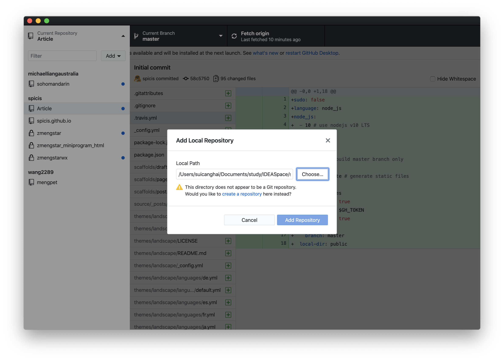
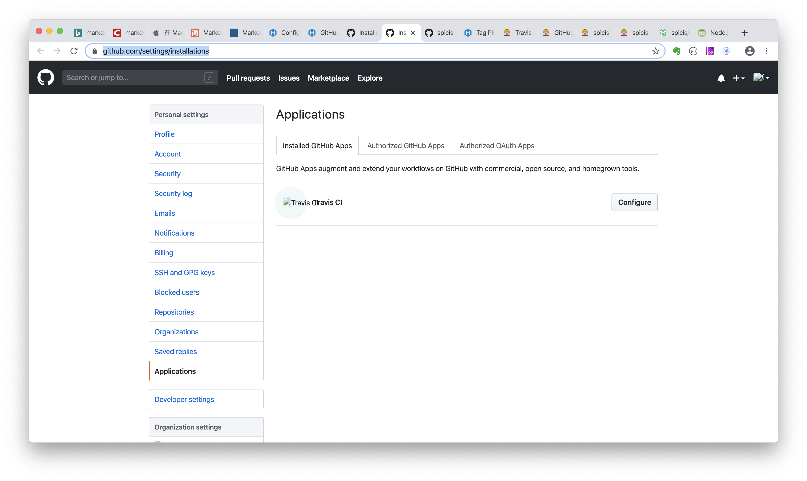
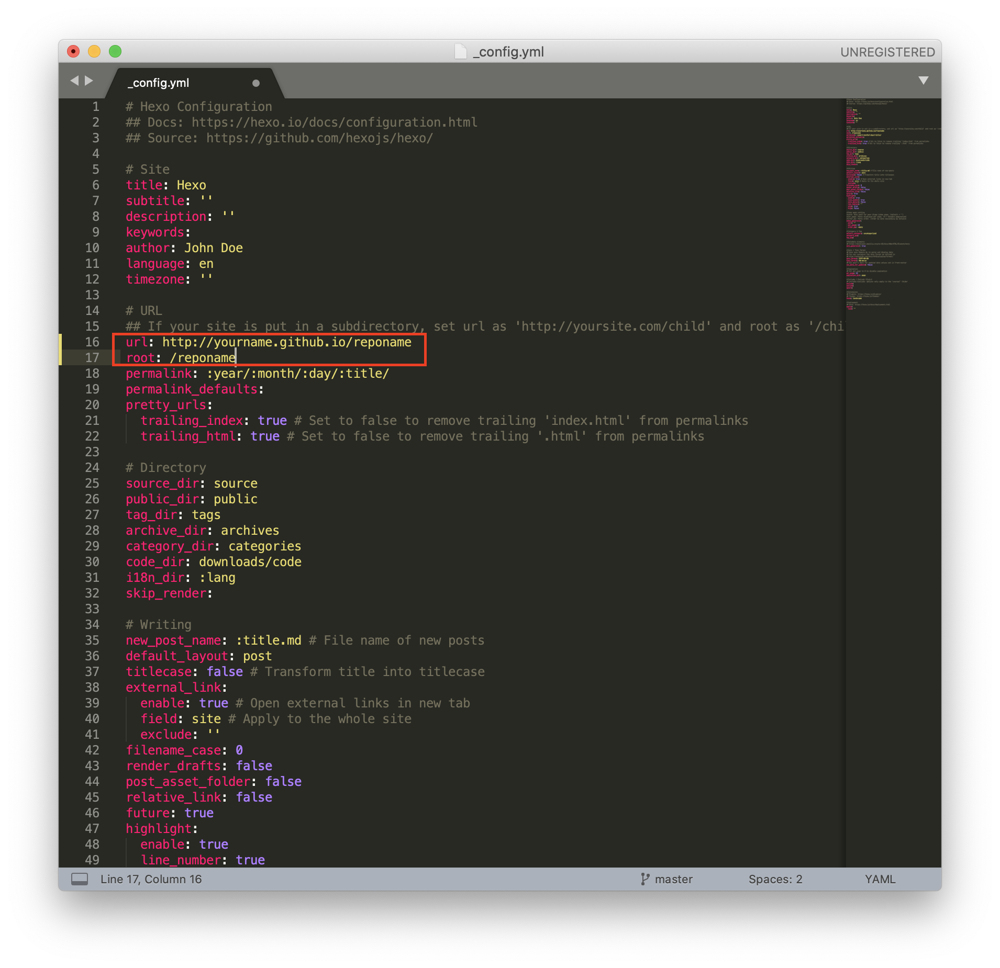
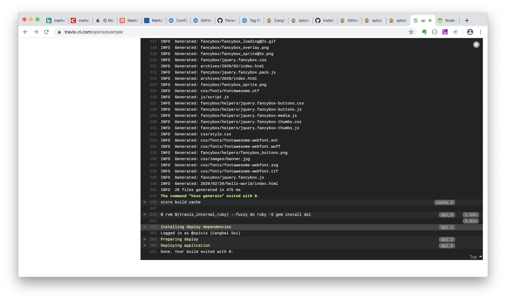

Hexo + Github pages guide
配置的时候可以参考以下几个网站的指引
- hexo 安装步骤 https://hexo.io/docs/
- hexo和github pages的配置 https://hexo.io/docs/github-pages
- hexo自动化部署工具travis ci的配置 https://travis-ci.com/
安装Node.js 和 Git
安装hexo
1 | $ npm install hexo |
在合适的目录下创建hexo的一个项目
1 | $ cd <yourfolder> |

创建完后会看到有这些文件
1 | . |
配置github pages
可以参考这个https://hexo.io/docs/github-pages
把刚才创建的hexo提交到github上，作为blog的repository
我用的是github desktop
这一步点击create new repository

配置Travis CI
Add Travis CI to your account.
Go to Applications settings, configure Travis CI to have access to the repo.

打开travis管理repositories的页面 Travis manage
点击Manage repositories on Github
完成后页面会自动回到travis管理页面
创建一个github token
在这里创建token，选中repo scope，并且把token value记下来 New Token
在travis中加上刚才配置的token
选择之前添加的repository，点击setting
在下面加上github token，name一定要是GH_TOKEN.
put GH_TOKEN as name and paste the token onto value.
在你的repo中增加一个.travis.yml文件
Add .travis.yml file to your repo (alongside _config.yml & package.json) with the following content:
1 | sudo: false |
修改__config.yml文件

commit and push

提交之后travis会自动build，可以到travis的管理网页上看build进度
Installing deploy dependencies
Deploying application
Done. Your build exited with 0.
说明成功了

在github上，切换repository到gh-pages branch
在chrome上访问你的blog
访问url是 https://yourname.github.io/yourrepo
比如我创建的是https://spicis.github.io/example/
更换theme
1 | $ cd <folder> |
修改_config.yml文件，把theme改成next

commit and push，等travis build成功后，就可以看到新的theme了